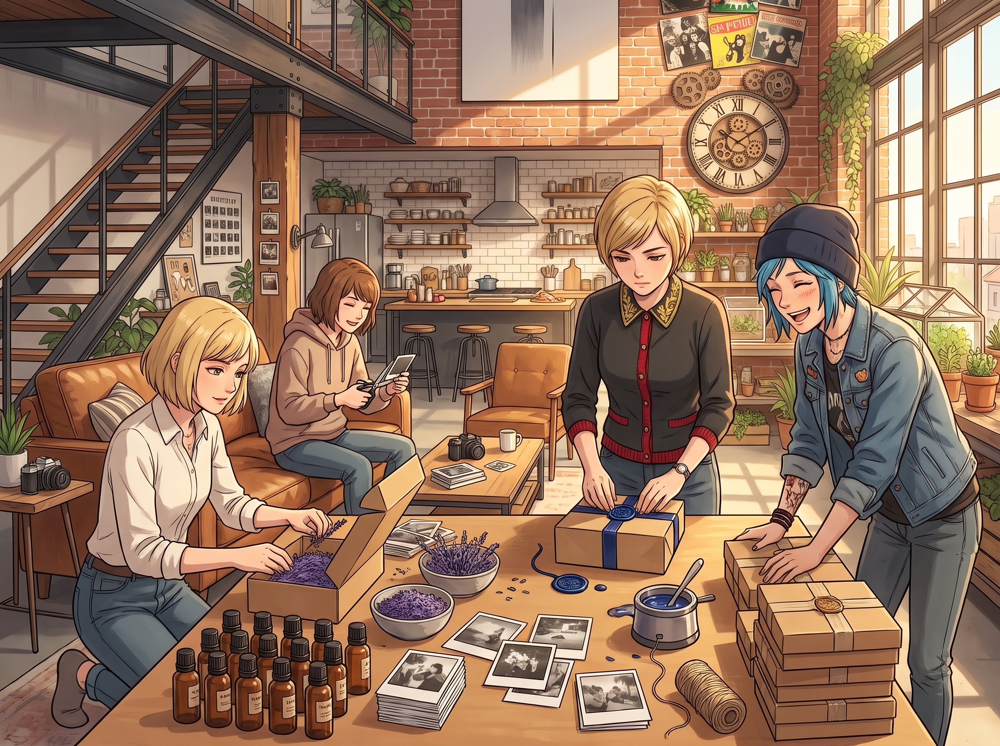

分送

週日下午，客廳長桌化身為極其高效的禮盒包裝流水線。
牛皮紙盒整齊排開，裡面墊著 Kate 親手曬乾的細碎薰衣草枝葉。每隻琥珀色精油瓶旁，都端正擺放著一張 Max 沖洗並裁切成郵票齒孔邊緣的黑白拍立得小卡，而外盒封口處則由 Victoria 用火漆印章壓下優雅的深藍色蠟封。
四人分配好路線，分頭出發送出這批帶有天台溫度的特製禮物。
一、東區老皮卡維修廠
老雪佛蘭皮卡帶著低沉的轟鳴停在堆滿廢舊輪胎的修車廠門口。修車廠老闆「大鬍子」漢克正滿頭大汗地從一輛皮卡的底盤下鑽出來，手裡抓著沾滿黑油的扳手。
「漢克大叔！接空投了！」Chloe 吹了一聲響亮的口哨，長腿一跨跳下車，將一個繫著亞麻麻繩的厚實牛皮紙盒拋了過去。
漢克連忙在髒兮兮的連體工作服上擦了擦手，小心翼翼地接住盒子。當他解開草繩、掀開盒蓋，看到裡面躺著的琥珀色精油瓶與一張由 Chloe 用廢舊金屬墊片自製的黃銅微型開瓶器時，整個人愣住了。
「這什麼玩意兒？高級機油添加劑？」漢克粗聲粗氣地問，但手勁卻放得極輕。
「薄荷迷迭香精油，專門用來拯救你那條被汽油和機油醃透了的老鼻子，」Chloe 咧嘴大笑，抬手敲了敲發動機蓋，「直接抹在太陽穴或者滴在毛巾上，比你那些劣質能量飲料提神一百倍。」
漢克擰開木蓋聞了一下，濃郁清冽的薄荷氣息瞬間衝散了車間刺鼻的尾氣味。這位滿臉橫肉的硬漢眼眶微不可察地軟了下來，嘴角揚起一抹粗獷的笑容，轉身從工具架底層摸出一整套未開封的進口火花塞塞給 Chloe：「算妳這藍毛丫頭還有點良心。拿去，給妳那台老爺車換上，免得下次在跨江大橋上拋錨！」
二、藝術學院導師工作室
與此同時，Max 站在藝術學院攝影系主任兼首席導師海因斯教授的辦公室門前，深吸了一口氣，輕輕敲響了虛掩的木門。
房間裡堆滿了過期大畫幅膠卷、老式暗房定時器與未整理的學生作業。那位以言辭犀利、在評圖課上經常把新生批哭而聞名的老教授正戴著老花鏡，揉著發脹的太陽穴審閱教案。
「教授，打擾了……」Max 走上前，將一個包裝極其精緻、側面貼著手工沖印黑白標籤的小禮盒輕輕放在桌角，「這是……我們在 Loft 自己萃取的草本精油，還有天台的香草茶包。」
海因斯教授挑了挑眉，拿起那個盒子，視線第一時間落在了瓶身標籤那張微縮的黑白銀鹽照片上。
老教授摘下眼鏡，拿著放大鏡仔細端詳著標籤邊緣手工壓出的齒孔與極具層次的光影過渡，隨後抬起頭，眼神裡罕見地沒有了課堂上的嚴厲，取而代之的是由衷的欣慰：
「把銀鹽感光材料的物理顆粒感與手工生活製品結合……Caulfield，妳開始懂得讓鏡頭裡的時間真正介入現實了。」教授旋開滴管，在手背滴了一滴，清幽的草本香氣頓時在滿是化學藥劑氣味的辦公室裡漫開，「非常乾淨的冷萃香氣。下週的期中展覽策劃，允許妳使用一號大展廳的獨立暗房進行專題陳列。」
三、暮色中的匯合
傍晚六點，四人在威拉米特河畔的露天咖啡館重新聚齊。
晚風微涼，落日將河面染成一片金紅。Chloe 把玩著剛到手的高性能火花塞，Max 捧著熱咖啡興奮地講述著導師的誇獎，Kate 拿著社區小朋友回贈的野花貼紙笑得無比滿足，而 Victoria 則優雅地翹著長腿，一邊翻看著西雅圖畫廊發來的合作回執，一邊難得沒有出言打斷身邊熱鬧的笑語。
屬於波特蘭的暮光在四人面前緩緩鋪展，將這份由泥土、金屬、暗房與生活釀出的香氣，長久地留在了每一個被溫暖照亮的生活角落。